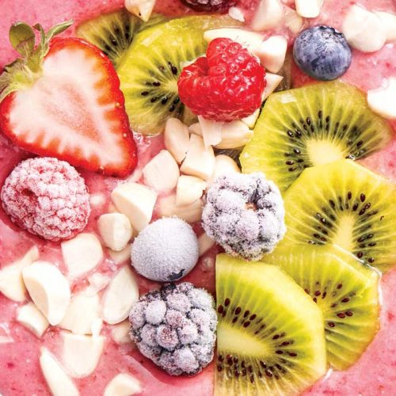

SWEETS

Spiced cherry smoothie bowl
Start your day with this tasty gluten-free cherry smoothie bowl that's high in calcium and protein.
Serves: 1
Time to make: 10 mins
Hands-on time: 10 mins
Nutrition Info (per serve)
Calories : 388cal
Kilojoules : 1631kJ
Protein : 16g
Total fat : 13.3g
Saturated fat : 2.5g
Carbohydrates : 41.6g
Sugars : 41.1g
Dietary fibre : 10.7g
Sodium : 120mg
Calcium : 472mg
Iron : 2.6mg
Ingredients
1 cup frozen cherries
¾ cup frozen strawberries
3 teaspoons ground linseeds (flaxseeds)
4fl oz low-fat plain yoghurt
½ teaspoon psyllium husks
¼ cup skim milk
½ teaspoon ground cinnamon
½ kiwifruit, peeled, sliced, to top
fresh and frozen berries, to top
1 tablespoon blanched almonds, chopped, to top
Instructions
1. Blitz cherries, strawberries, linseeds, yoghurt, psyllium husks, milk and cinnamon in a blender until thick.
2. Place the contents in a serving bowl and top with kiwifruit, berries and almonds.